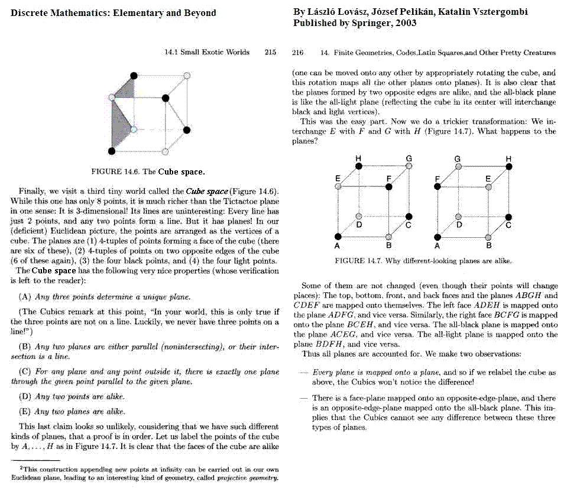

"The Cube Space" is a name given to
the eightfold cube
in a vulgarized mathematics text,
Discrete Mathematics: Elementary
and Beyond, by
Laszlo
Lovasz et al.,
published by Springer in 2003. The identification in a natural way of
the eight points
of the linear 3-space over the 2-element field GF(2) with the eight
vertices of a cube is an elementary and rather obvious construction,
doubtless found in a number of discussions of discrete mathematics. But
the less-obvious generation of
the
affine
group AGL(3,2)
of order 1344 by permutations of parallel edges
in such a cube may (or may not) have originated
with me. For descriptions of this process I wrote in 1984, see
Diamonds and
Whirls and Binary
Coordinate
Systems. For a vulgarized description of this process by Lovasz,
without any acknowledgement of his sources, see the following excerpt
from his book.

Page created October 24, 2008, by Steven H.
Cullinane